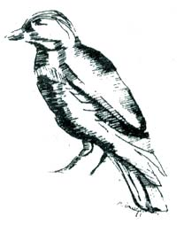
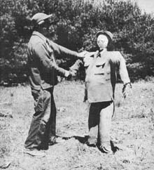

Me And My Scarecrow
July/August 1973
by HAROLD F. BLAISDELL
Crows are usually thought of as the traditional enemies of corngrowing farmers, but I recently discovered that grackles-the so-called "boat-tail" variety-are even worse villains in this respect. There are more of them, for one thing . . . and they're even bolder, for another.
Grackles follow the same devastating routine as that employed by crows. As soon as the tiny corn plants push above ground, the thieves waddle up one row and down the next, pulling the seedlings in meticulous succession and gobbling the kernels from which they sprouted. The first shoot-eating scoundrel quickly attracts others, and the all out gathering of the clan which swiftly follows can lay waste an entire planting in a very short time.
To me, the habits of crop-stealing birds are more than just natural history . . . they're a serious economic problem. You see, my wife and I live on a five-acre tract, in a home which we built largely by our own efforts. Much of our land is unfit for crops and on this acreage we set out 3,000 red pine and spruce seedlings, some of which are now 20 feet tall. I'm bringing the remainder of the property under cultivation as rapidly as possible, raising all the vegetables and berries needed for family use and selling the steadily increasing surplus at retail.
In line with my market gardening program, I plowed an additional quarter-acre this spring . . . land which had lain neglected for at least two decades. I cleared the plot as thoroughly as possible, but the turf remained so densely matted with the roots of trees, bushes, weeds and grass that only a very rough job of plowing and harrowing could be done. Nevertheless, I planted the entire patch in seven kinds of sweet corn and gambled that I'd be able to keep down the unwanted growth with my rototiller.
The planting totalled 40 rows, 40 hills to the row. This should mean 1,600 hills, three stalks to the hill and a yield of nearly 5,000 ears. I sold all the sweet corn I could grow last summer, about 1,000 ears, at 85 cents per dozen. With prices likely to be higher this year, I could-by pipe-dream reasoning-expect to gross as much as $400 from the planting.
But even if I had been inclined to indulge this tempting line of wishful thinking (and I wasn't that silly!), the cussed grackles would have set me straight in a hurry. They descended en masse and began pulling the corn shoots as fast as their green tips reached the light of day.
What to do? I had read about controlling birds with the timed explosions of carbide cannons. Even if my pocketbook could have stood the cost, however, the damage would have been complete before the devices could have been obtained and installed.
Shoot the buggers? Our lot lies in the midst of an otherwise thickly populated area, and my first conclusion was that shooting would be too dangerous. Then I remembered the mention of .22-caliber shot shells by a neighbor who claimed to have saved his berry crop from birds by annihilating the robbers with this rather exotic ammunition.
The shells that fellow used are made to be fired in .22 rifles which normally shoot solid bullets and are conceivably dangerous for more than a mile. The substitute ammunition, however, is loaded with a small charge of shot so fine that it's hardly more than dust. The pellets are lethal to small birds only at ranges of ten yards or less and virtually harmless to everything (living or otherwise) at greater distances.
To my surprise, the nearest sporting goods store stocked the specialized loads. I bought a box and marched off to war.
Luckily (at least from my standpoint), the hundreds of grackles which were asserting squatter's rights on our property had no fear of me at first. I zapped three in swift succession, at point-blank range.
But grackles, like their crow cousins, are no dummies. Stalking rapidly grew more and more difficult. By the time I had run my total to eight-no mean feat-no grackle would let me approach within howitzer range. This was fine with me, and gave me another idea.
I figured that if I built a scarecrow and draped it with the clothes I had been wearing while doing the shooting, the grackles might shun the impostor as completely as they had learned to avoid me. My ensemble, after all, was hardly better than that seen on most scarecrows . . . so its consignment to the cause would represent no great sacrifice.
Accordingly, I nailed together two narrow boards of appropriate lengths to form a cross-shaped framework and planted this support firmly in the ground in the middle of the corn patch. Next, I stuffed a corner of an old pillowcase with hay and tacked the ball in place as a head. Then I rigged the frame with the clothes I had been wearing.
When I had finished stuffing the ragged pants and shirt with the hay and had pinned my old hat to the "head", the damned thing looked altogether too much like me to suit my taste. The dummy incorporated all less-than-flattering details down to and including my pot gut. Neighbors promptly began attesting to the likeness by waving as they drove by.
Although the unmistakable resemblance has cost me something in terms of vanity, the in-my-image scarecrow has paid off handsomely by putting the fear of death into the grackles. To the best of my knowledge, not one has dared alight in the cornfield since the straw guard's construction, and the nowunmolested corn has rapidly outgrown its vulnerability as far as birds are concerned.
Just to keep the game dishonest, though, I take a daily turn around the patch with my rifle under my arm. I never get to within range of a grackle, but I make it a point to fire a round or two into the tree tops to show them that I'm still on the qui vive.
If you're troubled with feathered robbers, the same frontal attack-followed by deception-should work as well for you as it has for me. And if you build a scarecrow in your own image, I'm sure that your effigy won't look as downright disreputable as mine.
So the crows and other feathered robbers made off with half your corn crop this spring before the plants had hardly even poked their little green heads out of the ground. Makes you wanna run out with grandpa's blunderbuss and have at the rascals, doesn't it? Or at the very least set up a scarecrow . . . except for the rumors you've heard about modern, sophisticated birds and their refusal to be frightened by such traditional devices.
Well, it's too late to be of much help this year, but next time around you might want to combine both those impulses the way Harold Blaisdell does . . . by building yourself a scarecrow with some real authority.

|
 |
 |
|